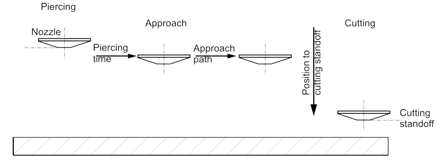

Taglio
Strategie di accostamento
Al fine di evitare danni al contorno da incisione preliminare, il materiale viene inciso in via preliminare a pochi millimetri su un lato del contorno. Il contorno viene quindi accostato utilizzando varie strategie a seconda del materiale, dello spessore del materiale e della dimensione del contorno.
Accostamento normale
Con un accostamento normale, il taglio avviene direttamente dal foro iniziale con i parametri di taglio dall’apposito piano di taglio.
Accostamento ridotto
Il contorno viene accostato a velocità ridotta. Potenza, frequenza, distanza ugello.

Accostamento con pretaglio
Dopo l’incisione preliminare, viene effettuato un taglio di pochi millimetri a velocità ridotta, a seconda dello spessore del materiale. La testa di taglio ritorna quindi al foro iniziale utilizzando l’ultima velocità di posizionamento attiva. Il contorno viene quindi accostato e tagliato con i parametri dall’apposito piano di taglio.
Marcatura e lavorazione di bulinatura
Le parti del materiale sono contrassegnate da un viraggio di colore sulla superficie del materiale. Normalmente la marcatura non può più essere avvertita dopo la smaltatura o la verniciatura poiché viene rimossa solo una minima quantità di materiale.
Processo di taglio
Taglio con contorno grande, medio e piccolo
Nel contesto della programmazione CNC e del taglio laser di TRUMPF, i concetti di contorno grande, medio e piccolo si riferiscono alle dimensioni e alla complessità di diverse caratteristiche geometriche in un processo di taglio o lavorazione. Queste distinzioni aiutano ottimizzare il movimento dell’utensile, le strategie di taglio e la velocità di lavorazione.
1. Contorni grandi
-
I contorni grandi si riferiscono a tagli lunghi e continui o a profili esterni di un pezzo.
-
Si tratta di solito di traiettorie di taglio primarie che definiscono la forma esterna.
Caratteristiche:
-
Dritto o con curva regolare.
-
Meno interruzioni.
-
Possono essere tagliati a velocità più elevate poiché c’è meno rischio di incremento termico o perdita di precisione.
2. Contorni medi
-
Caratteristiche legate alle dimensioni medie all’interno o lungo il pezzo, come grandi rientranze, fori o scanalature.
-
Sono più complessi dei contorni grandi, ma non sono così intricati come i contorni piccoli.
Caratteristiche:
-
Possono richiedere regolazioni della velocità di taglio per a presenza moderata di dettagli.
-
Necessità di un certo livello di controllo di precisione per mantenere l’accuratezza.
-
Può influenzare la dissipazione di calore e il comportamento dei materiali.
3. Contorni piccoli
-
Si riferiscono a tagli dettagliati e intricati, come piccoli fori, motivi fini o spigoli vivi.
-
Il taglio di contorni piccoli richiede una maggiore precisione e velocità più basse per non perdere la precisione ed evitare difetti.
Caratteristiche:
-
Spesso coinvolgono raggi stretti, forme intricate o aree di taglio densamente affollate.
-
Inclini agli effetti termici (fusione, sbavature, distorsione del materiale).
-
Possono richiedere strategie adattive come potenza ridotta, controllo fine degli ugelli, o tecniche di microgiunzione.
Curve di calibratura analogica
TRUMPF utilizza una curva di calibratura a 3 punti per il controllo laser analogico.

FlyLine
FlyLine è una strategia di lavorazione che può aiutare a risparmiare tempo durante la lavorazione di determinati tipi di lamiera. FlyLine è particolarmente efficace per griglie per fori.
-
Il raggio laser viene acceso e spento al volo con un elevato grado di precisione di posizione. Gli assi non si fermano quando il raggio laser viene acceso e spento.
-
I singoli contorni che non si trovano su una linea vengono suddivisi in segmenti di contorno paralleli agli assi. Questo permette di evitare lavorazioni degli spigoli. La velocità è ridotta solo per i pochi cambi di direzione.